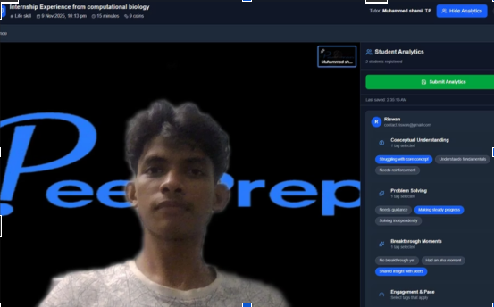
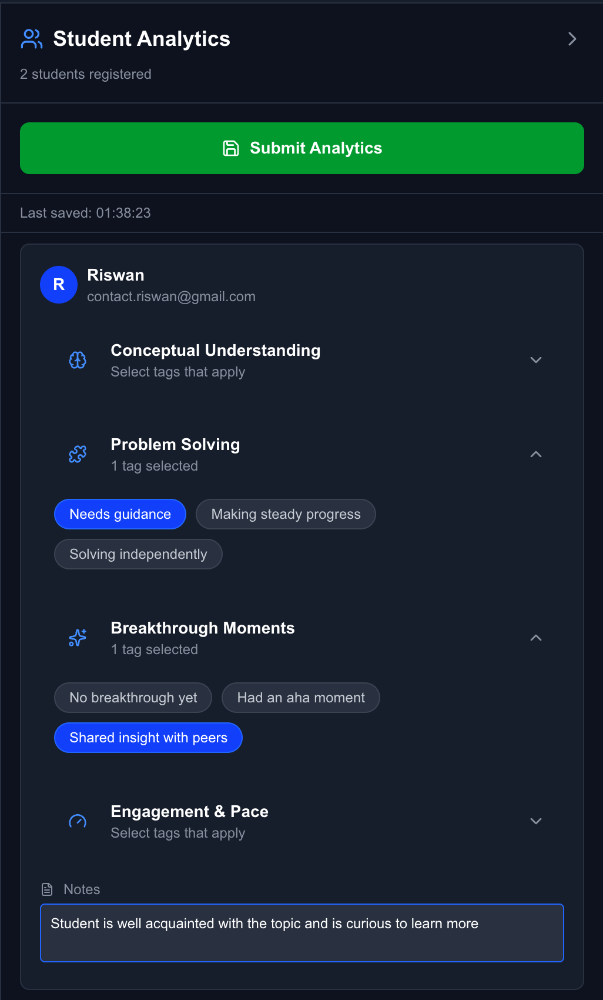
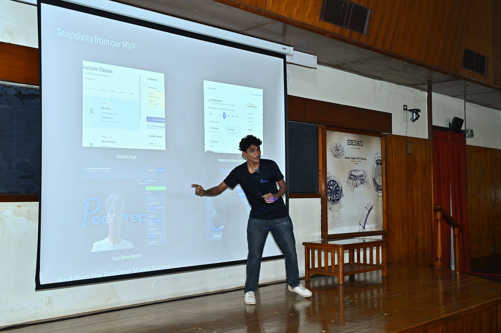

images/session-snap.png

images/analytics.png

images/trial.jpg

Peer and AI tutoring Project named PeerPrep
Project lead, 2025 to 2026.
Students get stuck on small mistakes that repeat. For this project we paired live peer tutoring with an AI tutor and logged where each student went wrong, so the next session could start from there.
Watch the project explained
What we built and trialled
- A working prototype of live online peer and AI tutoring, trialled at a school with about 150 students and 6+ tutors running in-house sessions.
- Attention tagging during sessions, so each session left a record of how engaged the student was.
- A per-question error log (concept, error type, marks lost) to spot recurring mistakes.
- A benchmark of a competing AI homework tool across maths domains. The gaps it exposed shaped our roadmap.
Designed, not built
The next stage was a model that adapts to each student from their attention tags and error history, with knowledge tracing on top. We reached the design stage and did not build it.
Contact me for more details on the evaluation approach and the trial.